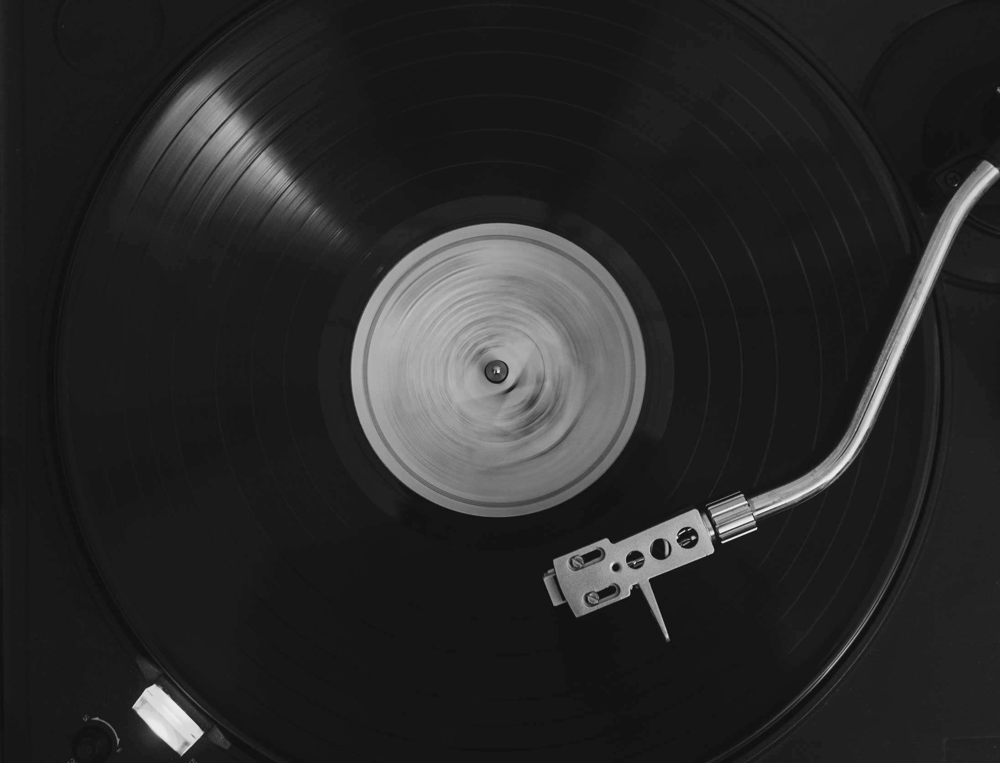

История электропроигрывателей
Электропроигрыватели появились в конце 1920-х годов. Ранние электропроигрыватели были рассчитаны на воспроизведение монофонических записей и оснащались электромагнитными звукоснимателями. В качестве игл использовались обычные граммофонные; их необходимо было менять после каждого проигрывания записи.
По качеству звучания уже первые электропроигрыватели превосходили современные им граммофоны и патефоны за счёт использования электронных усилителей сигнала. К тому же головки звукоснимателя у электропроигрывателей были легче, что меньше изнашивало пластинки и продлевало срок их службы. Основными недостатками электропроигрывателей были необходимость использования внешнего усилителя и громкоговорителя и, разумеется, потребность в электричестве. В 20-е — 30-е годы это существенно ограничивало сферу их применения. Также электропроигрыватели были гораздо дороже механических устройств для воспроизведения грамзаписей.
В СССР первый электропроигрыватель, получивший название ЭППГ-1 (электропроигрыватель пластинок граммофонных), был выпущен в конце 1935 года на Московском электромашиностроительном заводе. ЭППГ-1 был рассчитан для проигрывания стандартных патефонных грампластинок на скорости 78 об/мин совместно с любым радиовещательным приёмником, имеющим вход для внешнего звукоснимателя.
В 1940-х годах появились головки звукоснимателей пьезоэлектрического типа, которые были легче и проще по конструкции. В СССР такие головки начали выпускать в 1950 году. В более современных электропроигрывателях вновь вернулись к использованию электромагнитных (MM и MC) головок звукоснимателя.
Ещё несколько лет спустя, когда появились долгоиграющие пластинки на 33⅓ об/мин, наладили выпуск электропроигрывателей с двумя скоростями вращения. В ранних моделях переключение осуществлялось путём перемещения резинового прижимного ролика вверх-вниз вдоль ступенчатого вала электродвигателя. Для советских ЭПУ второго и третьего классов такая схема использовалась вплоть до окончания их выпуска.